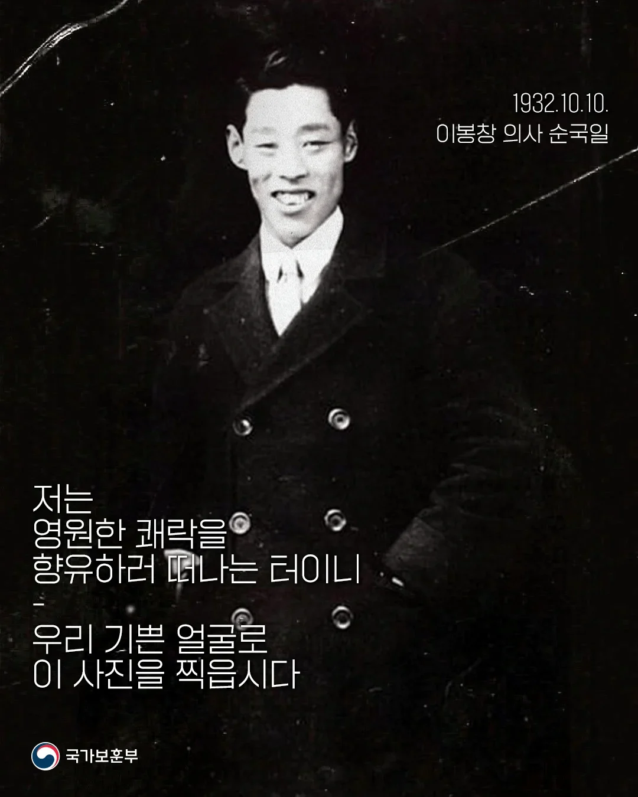

흔히 왜왕의 행렬에 수류탄을 투쳑했으나 암살에 실패하고 체포된 것으로 알려진 이봉창 의사.
그러나 자세한 내막은 더 드라마틱한데 일본 경찰들은 수류탄 투척 직후 이후 범인을 특정하지 못 하고
애꿏은 일본 민간인만 두들겨 팸.
이때 조용히 빠져나갔다면 안 잡힐 수 있었는데 민간인이 자신때문에 억울한 고초를 당할 바에
붙잡히는게 낫다고 생각해서 당당하게 자수함.

흔히 왜왕의 행렬에 수류탄을 투쳑했으나 암살에 실패하고 체포된 것으로 알려진 이봉창 의사.
그러나 자세한 내막은 더 드라마틱한데 일본 경찰들은 수류탄 투척 직후 이후 범인을 특정하지 못 하고
애꿏은 일본 민간인만 두들겨 팸.
이때 조용히 빠져나갔다면 안 잡힐 수 있었는데 민간인이 자신때문에 억울한 고초를 당할 바에
붙잡히는게 낫다고 생각해서 당당하게 자수함.
행적이 참 흥미로운 의인이라고 생각함.. 재능있고 자유로운데 결국 대의를 지지않는
대의를 지나치지 않는?
대의를 저버리지않는, 지지 않는 이 표현을 자주쓰지 지나치지 않는은 많이 못봄
지나치지 않는 건 불의지
"지지않는" 이라고 쓰면 대의를 저버린것 같잖아...
내말이!
뭔소리야 대의를 지지않는이라는 표현 처음봄? 인륜을 지지않는, 도리를 지지않는 아니 뭐 평범한 표현이잖아. 그걸 또 내말이 하고 동조하는 애는 뭐고ㅋㅋㅋㅋㅋㅋㅋㅋㅋ 우리나라 의무교육을 저버린거임?
ㅇㅇ 처음보는데.
책임이나 의무를 맡는다는 의미의 단어는 "지다"임.
https://ko.dict.naver.com/#/entry/koko/2bd0f4bb42134f59a028a2e028da9606
"지지않다"는 "지다"의 부정이고.
국어사전을 보면 '회피하다'의 뜻풀이로 꾀를 부려 마땅히 져야 할 책임을 "지지 아니하다"라고 설명하고 있음.
https://ko.dict.naver.com/#/entry/koko/0e539d4a0d26474e9516ea2629a20cbf
진짜로 "대의를 맡았다"의 의미로 "지지않는"이 많이 쓰이는 표현이라면 예문 링크라도 걸어봐.
처음보는데
의무교육을 저버린쪽이..우리가 아닌거같은데
D의 의지!!
인생의 목적이 쾌락이라면 지난 31년 육신의 쾌락은 대강 맛보았습니다.
이제는 영원한 쾌락을 꿈꾸며 우리 독립 사업에 헌신할 목적으로 상하이에 왔습니다.
진짜 큰 그릇이야
잘 안알려진 이봉창의 최후진술은
김구의 부추김을 받아 천황에게 난폭한 짓을 했다. 김구는 원망하지 않지만, 그 사람의 부추김에 놀아난 나 자신의 어리석음을 원망하고 있다.
이거임 독립군내에 뭔가 정치적 문제가 있었던거같음
ㄹㅇ인가
직전 진술이랑 너무 달라서 조작이 아닐까..
https://db.history.go.kr/modern/level.do?levelId=ij_030_$1exp
이는 이봉창의사의 답변이 아닐 가능성이 많다. 제9회는 마지막 신문이었다. 예심판사는 의도적인 질문을 하고, 이에 맞게 답변을 꾸민, 즉 예심판사의 작품이라는 생각을 갖게 한다.
학계에서는 이봉창의 답변이아니라고 생각하는듯
조작된 진술작품인거같은데.. 진술이 일관되어야하는데 직전진술하고 찾아보니 넘 다르고 학계의견도 비슷한듯
[문]피고인은 올해 1월 8일의 흉행(폭탄 테러)을 현재 어떻게 생각하고 있는가?
[답]나는 형무소에 수용된 후 불교 이야기를 듣거나 불교 책을 읽거나 하여 여러 가지 생각을 한 결과 나의 사상은 내가 사바 세계에 있을 때와 아주 다르게 변했습니다.
나는 金龜(김구)로부터 부추김을 받아 결국 그런 마음이 생겨 천황 폐하에 대해난폭한 짓을 했습니다만 오늘에는 굳이 김구를 원망하지는 않으나그 사람의 부추김에 놀아난 나 자신의 어리석음을 원망하고 있습니다.
나의 어리석음으로 엄청난 짓을 해 참으로 변명의 여지가 없다고 생각하고 있습니다.
[문]그렇다면 조선인을 행복하게 해주기 위해서는 어떻게 했으면 좋겠다고 생각하는가?
[답]조선인은 대체로 미신적이지만 진정한 신앙은 없고 또 이해력도 낮다고 생각합니다.
생활 상태, 문화의 정도도 아직 내지(일본) 사람에게 미치지 못합니다.
그런데 나는 종교로 조선인을 이끌고 정신 수양과 인격 양성 방면으로 힘써 간다면 조선인도 점점 발전해 내지인(일본인)과 서로 이해하고 융화하여 피차
일본 국민으로서 유쾌하게 생활해 가게 될 것이라고 생각합니다.나는 이와 같은 방법으로써 조선인의 행복을 증진시켜야 한다는 생각으로 바뀌었습니다.
출처
https://db.history.go.kr/modern/level.do?levelId=ij_030_0010_00010&isLeaf=0
9차 심문 조서 내용 중 2개 가지고 왔는데.. 이봉창이 독립운동에 뛰어든 이유를 생각해보면.. 변절하거나 임정 내 정치적 문제가 있었다고 볼 수는 없고 걍 극심한 고문 후유증 + 일제가 조서 조작쳤을 가능성도 있다고 생각함.
참고로 출처에서 1차부터 9차 조서 내용 다 볼 수 있으니 직접 보고 판단하셈
마음씨와 마음가짐 자체부터 그냥 의인임.
와 진짜 범접할 수조차 없는 마인드...
개인적으로 살아서 돌아와서 경험을 독립군들에게 가르치면서 계속해서 발전햇어야 햇다고봄
오로지 광복이라는 대의만을 좇는다면 그리했겠지. 그는 무고하게 고초를 겪을 지배국의 소시민마저 외면할수 없었던 것이고.
빛